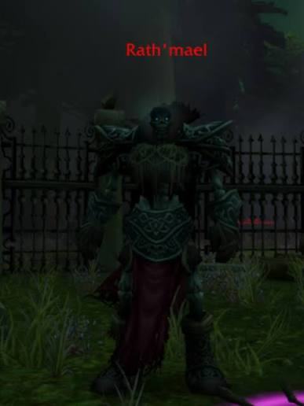
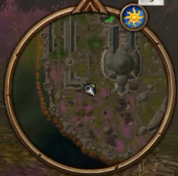

Normalmente es el ultimo encuentro tras derrotar a Bjork, la razon para dejarlo para el final es para una mayor eficiencia en tiempo, insignificante a no ser que tu grupo este ralizando múltiples barridos o quiera hacer speedrun.
Siempre lo encontraras junto a dos ghouls, detras de la plaza donde se invoca a The Abandoned.

Su única habilidad es un area que hace hace daño de fuego a los jugadores que se paran en ella, realiza un aturdimiento para prevenir su lanzamiento o muevete del area de efecto.
| Objeto | Probabilidad de caída |
|---|---|
| Espejo de Rath´mael | 38% |
| Bastón de aguja fría | 31% |
| Rotmender´s Treads | 30% |
| Plano: fermentador | 7% |
| Plano: recuperador Arcano | 7% |